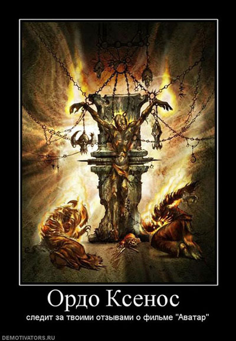

Post Scriptum


См. Илья Маслов «Национал–Социализм как религиозная альтернатива». Я согласен не со всем в статье, но идею одобряю: раз уж большинство не может без веры и т.п., то пусть у них будет вера, от которой больше пользы и меньше побочного вреда для прогресса.
«— Тогда я лишь надеюсь, что ты знаешь, какое будущее ждет мир, лишившийся религии.
— Знаю, — ответил Император. — Это будущее и есть моя мечта. Империум Человека, существующий без помощи богов и высших сил. Галактика, объединенная вокруг Терры — ее сердца.
—- Объединенная галактика? — переспросил Урия, уже не обращая внимания на горящую церковь. Он, наконец, начал понимать масштабы притязаний Императора.
— Именно. Единение Терры закончено, и настало время восстановить власть человечества над звездами.»
© Г. Макнилл, «Последняя церковь»